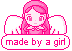

| ❤︎ watchlist |
| ❤︎ art |
| ❤︎ blog |
| ❤︎ etc. |
à«® ˶ᵔ ᵕ ᵔ˶ რi hope you like it here, i hope something on this page makes you smile â‚^. .^â‚⟆
hi im gangle! my pronouns are she/her and my birthday is june 30th.
i really enjoy pink stuff, anime, sanrio (chococat!!!), and other things like that. my favorite anime is probably cardcaptor sakura, but i havent finished it yet (｡•́︿•̀｡) the body im trapped in is a highschoolers which terrifies me every day ◝(ᵔᗜᵔ)◜. my favorite game is animal crossing newleaf and my favorite villager is canberra. i like snails house a lot ♫ and i dont really like coding! but i do like drawing even if my art isnt the greatest. also i love zooble.
ᓚ₍⑅^..^₎♡
my tumblr
